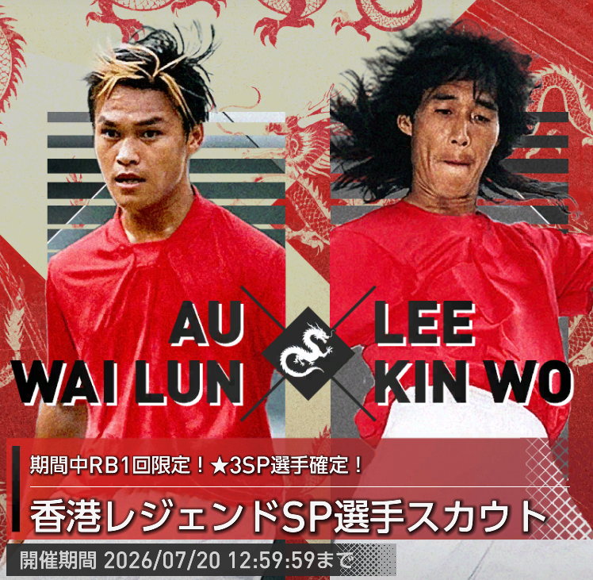
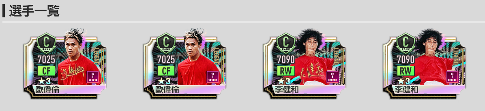
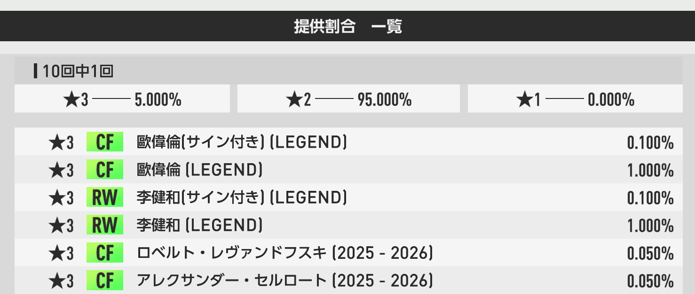
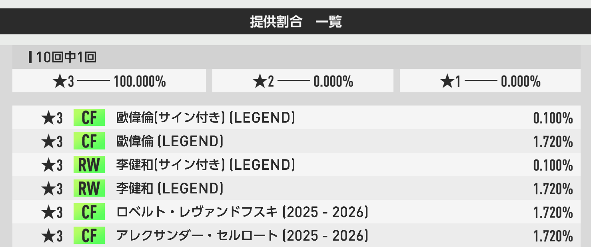
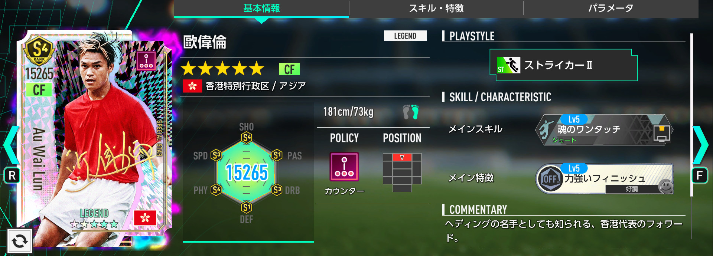
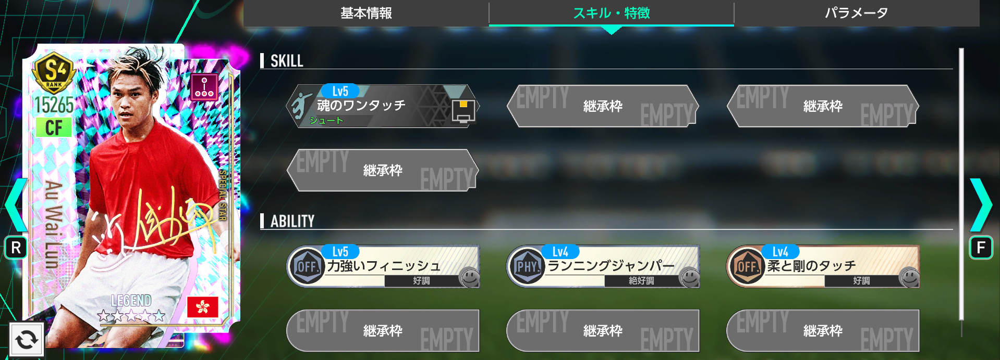
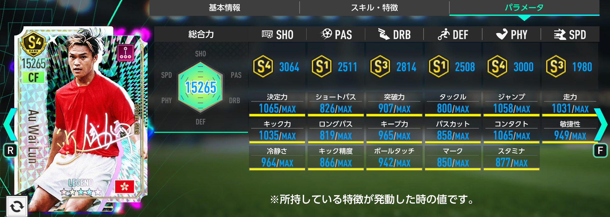
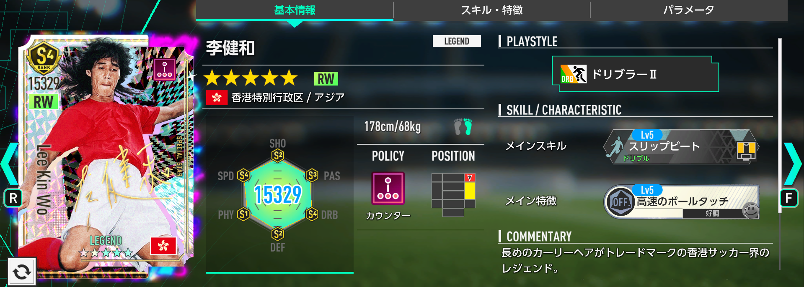
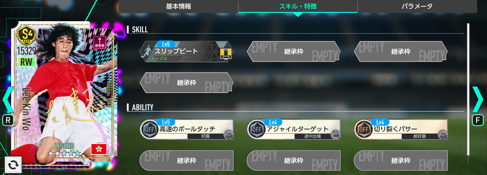
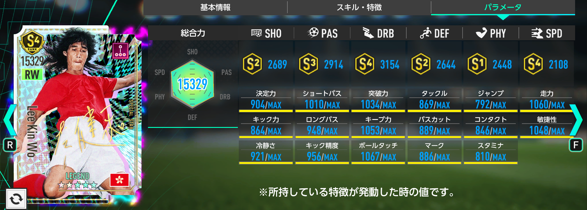

香港サッカー界のレジェンド選手が登場!!歐偉倫（オウ・ワイルン）と李健和（リー・キンワ）の香港レジェンドSP選手スカウトは引くべき？新SP選手2名を徹底評価
サカつく2026に「香港レジェンドSP選手スカウト」が登場しました。今回の新SP選手は、香港サッカー界のレジェンドである歐偉倫（オウ・ワイルン）と李健和（リー・キンワ）の2名です。この記事では、ガシャの注意点、排出仕様、2選手の性能、フォーメーションコンボ要員としての価値を整理し、引くべきかどうかを評価していきます。
香港レジェンドSP選手スカウトの注目ポイント

今回の香港レジェンドSP選手スカウトは、香港サッカー界のレジェンド選手が新SP選手として登場する限定スカウトです。新規追加された2名はどちらもLEGEND枠で、カウンターポリシーの選手として実装されています。
- ★3の排出率は5%。
- 排出される★3選手は2026年5月15日までに登場した選手のみ。
- RB1回限定★3確定10連は、ピックアップ確定ではありません。
- RB版では新SP2名とサイン付き2種を含む全60種の★3SPが同確率で排出されます。
- 新SP選手がピックアップ確率で引けるのは「通常」タブのGBで引けるガシャです。
- 開催期間終了後、本ピックアップ対象選手はSP選手スカウトには追加されません。
- 開催期間終了後、「香港レジェンドSP選手スカウトメダル」は1枚につき「エクストラコイン」5枚に変換されます。


特に注意したいのは、RB1回限定の★3確定10連です。名前だけ見ると新SP選手を狙いやすそうに見えますが、実際にはピックアップ確定ではなく、対象となる全60種の★3SP選手が同じ確率で排出される仕様です。歐偉倫（オウ・ワイルン）や李健和（リー・キンワ）をピンポイントで狙いたい場合は、通常タブのGBガシャを確認してから引くようにしましょう。
今回のガシャは引くべき？
香港レジェンドのファン、サイン付きカードを狙いたい人は引く価値があります。ただし、純粋な戦力強化目的なら優先度はやや低めです。性能面だけで見るなら、同時開催中の「日本代表SP選手スカウト」を優先した方が良いでしょう。
今回の最大の魅力は、性能よりも「香港レジェンド」という希少性です。開催期間終了後、本ピックアップ対象選手はSP選手スカウトに追加されないため、歐偉倫（オウ・ワイルン）や李健和（リー・キンワ）のファンにとっては、今回を逃すと入手機会が限られる可能性があります。
また、低確率でサイン付き選手カードを入手できる点も今回だけの魅力です。コレクション要素を重視している人や、香港サッカー界のレジェンド選手をチームに加えたい人にとっては、性能以上の価値があります。
一方で、戦力強化という視点ではやや厳しめです。2名とも最大強化時の総合力は15265で、SP選手全体の中では上位寄りの数値ですが、同じポジション・同じポリシーに強力な競合選手が存在します。特に同時開催中の日本代表SP選手スカウトには、歐偉倫（オウ・ワイルン）の競合となる上田綺世、李健和（リー・キンワ）の競合となる伊東純也が存在しており、性能目的ならそちらを優先したい内容です。
フォーメーションコンボの発動条件を満たすキー選手としての価値はありますが、その目的だけであれば「SP選手引換券【ウィークリー】」で交換できる選手でも代用可能です。つまり、今回のスカウトは「性能で絶対に引くべき」というよりも、「好きな選手だから欲しい」「限定カードとして確保したい」という人向けのガシャと言えます。
歐偉倫（オウ・ワイルン）〔LEGEND〕の評価

基本スペック
| ポジション | CF |
|---|---|
| ポリシー | カウンター |
| プレイスタイル | ストライカーⅡ |
| 初期総合力 | 6680 |
| 最大強化 | 15265 |
389人中54位
118人中20位
75人中8位
22人中5位
歐偉倫（オウ・ワイルン）は、カウンターのCFとして実装されたストライカーⅡ持ちのLEGEND選手です。最大強化時の総合力は15265で、全SP選手389人中54位。同ポジション75人中8位、同プレイスタイル22人中5位と、数字だけを見れば十分に優秀な水準です。
特にカウンターCFに限定すると、全22名中総合力第4位。さらにプレイスタイルを「ストライカー」で絞り込むと第3位に入るため、カウンター編成のCF候補としては決して弱い選手ではありません。所持特徴も「好調トリガー2つ、絶好調トリガー1つ」と扱いやすく、調子に応じた能力上昇を狙いやすい構成です。


フォメコン要員としての価値
歐偉倫（オウ・ワイルン）は、金のフォーメーションコンボ「エウスカルドゥナク'12」の発動条件である「ストライカーⅡ」のキー選手として採用できます。ストライカーⅡが必要な編成を組みたい場合、選択肢の1人として見ておく価値はあります。
ただし、フォメコン要員だけが目的であれば、「SP選手引換券【ウィークリー】」で獲得できる「アンタンシェン」でも代用可能です。歐偉倫（オウ・ワイルン）を引く理由がフォメコン条件の穴埋めだけであれば、無理にGBを使う必要性は高くありません。
おすすめ度
歐偉倫（オウ・ワイルン）は、カウンターCFとして見れば優秀な部類です。しかし、恒常SPのロベルト・レヴァンドフスキがストライカーⅢを所持しており、現状のカウンターCFでは最強格の存在です。さらに同時開催中の日本代表SP選手スカウトで入手可能な上田綺世も、性能面では上位互換に近い立ち位置になります。
そのため、選手のファンなら最優先で獲得する価値がありますが、純粋な性能目的では優先度は低めです。「決して弱くはないが、競合が強すぎる」という評価が最も近い選手です。
李健和（リー・キンワ）〔LEGEND〕の評価

基本スペック
| ポジション | RW |
|---|---|
| ポリシー | カウンター |
| プレイスタイル | ドリブラーⅡ |
| 初期総合力 | 6678 |
| 最大強化 | 15265 |
389人中55位
118人中21位
25人中6位
49人中10位
李健和（リー・キンワ）は、カウンターのRWとして実装されたドリブラーⅡ持ちのLEGEND選手です。最大強化時の総合力は15265で、全SP選手389人中55位。同ポリシー118人中21位、同ポジション25人中6位、同プレイスタイル49人中10位という評価になります。
カウンターRWに限定すると全7名中総合力第3位で、プレイスタイル「ドリブラー」で絞り込んでも第3位です。順位だけを見ると悪くありませんが、RWは競合の質が高く、性能面で最優先に採用したいかと言われると少し難しい立ち位置です。


特徴構成と起用イメージ
李健和（リー・キンワ）の所持特徴は「好調トリガー1つ、絶好調トリガー1つ、途中交代1つ」という構成です。スタメン固定で使うよりも、交代枠として起用した時に強みを出しやすいタイプと言えます。
ただし、カウンターRWには恒常SPのモハメド・サラーという非常に強力な選手が存在します。さらに同時開催中の日本代表SP選手スカウトでは伊東純也も入手可能で、性能面ではこちらも上位互換に近い存在です。李健和（リー・キンワ）は総合力こそ悪くありませんが、最前線の戦力として見ると競合に押されやすい評価になります。
フォメコン要員としての価値
李健和（リー・キンワ）は、金のフォーメーションコンボ「リーベル'18」の発動条件である「ドリブラーⅡ」のキー選手として採用できます。ドリブラーⅡの条件を満たしたい場合には候補になりますが、この用途だけであれば「SP選手引換券【ウィークリー】」で獲得できる「J・ラマンベラ」で代用可能です。
おすすめ度
李健和（リー・キンワ）は、カウンターRWの中では総合力上位に入る選手です。しかし、現状最強格のモハメド・サラー、同時開催中の日本代表SPで狙える伊東純也と比較すると、性能面で優先して獲得する理由は弱めです。
フォメコン要員としての価値はありますが、代用選手が存在するため、戦力強化目的で無理に狙う必要はありません。選手のファン、香港レジェンドを集めたい人、サイン付きカードを狙いたい人向けの選手です。
まとめ：性能目的なら優先度は低め。香港レジェンドファン向けの限定スカウト
香港レジェンドSP選手スカウトは、歐偉倫（オウ・ワイルン）と李健和（リー・キンワ）という香港サッカー界のレジェンド選手が登場する、コレクション性の高い限定スカウトです。開催期間終了後にSP選手スカウトへ追加されない点や、サイン付きカードを狙える点を考えると、ファンにとっては非常に魅力的な内容です。
一方で、性能面だけで評価すると、同時開催中の日本代表SP選手スカウトに軍配が上がります。歐偉倫（オウ・ワイルン）はカウンターCFとして優秀ですが、上田綺世やロベルト・レヴァンドフスキという強力な競合が存在します。李健和（リー・キンワ）もカウンターRW上位ではあるものの、伊東純也やモハメド・サラーと比較すると優先度は下がります。
結論として、香港レジェンドのファンやサイン付きカードを狙いたい人は引く価値あり。純粋な戦力強化を目的にするなら、7月20日までは日本代表SP選手スカウトを優先するのがおすすめです。